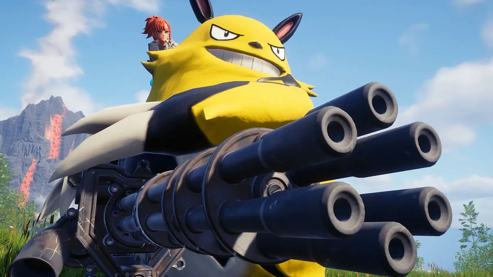

Palworld Anuncia Remoção Polêmica de Mecânica Após Pressão da Nintendo
São Paulo 8 de maio de 2025
Em uma reviravolta que certamente agitará a comunidade de jogadores, a Pocketpair, desenvolvedora do popular "Palworld", anunciou hoje a remoção de uma mecânica de jogo que vinha causando grande controvérsia e pressão por parte da Nintendo.
Embora a Pocketpair não tenha especificado qual mecânica será removida, rumores e discussões acaloradas nas redes sociais apontam para similaridades entre designs de "Pals" (as criaturas colecionáveis do jogo) e alguns Pokémon icônicos da franquia da Nintendo. Essa semelhança havia gerado debates sobre possível plágio e infringimento de direitos autorais desde o lançamento explosivo de "Palworld" no início deste ano.
Em um comunicado oficial, a Pocketpair declarou que a decisão de remover a mecânica foi tomada para "garantir a disponibilidade contínua do jogo para todos os jogadores". A empresa reforçou seu compromisso em criar uma experiência única e original, indicando que futuras atualizações trarão novos conteúdos e mecânicas distintas.
A notícia dividiu a opinião dos jogadores. Enquanto alguns lamentam a perda de uma mecânica que consideravam interessante e parte da identidade do jogo, outros apoiam a decisão da Pocketpair como um passo necessário para evitar problemas legais e focar na inovação.
"Palworld", que rapidamente se tornou um fenômeno global ao misturar elementos de sobrevivência, mundo aberto e captura de criaturas, agora enfrenta o desafio de manter seu sucesso e originalidade diante dessa mudança significativa. Resta aos jogadores aguardar as próximas atualizações para descobrir como essa remoção impactará a experiência de jogo e o futuro do promissor título da Pocketpair.